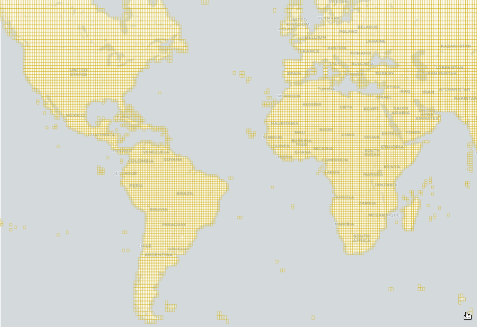

1
Acquisition de données géospatiales : Sources de données Vectorielles
OpenStreetMap (OSM) : Le Wikipedia des Cartes
Sans doute, la plus grande communauté de cartographes, qui met à jour en continu la géographie de notre planète.
- Éléments naturels et d’occupation des sols (plages, forêts, exploitations agricoles)
- Lieux d’intérêt (restaurants, hôtels, commissariats, églises, musées)
- Infrastructures de transport (arrêts de bus, feux de circulation, panneaux de signalisation)
- Zones habitées (villes, villages, localités)
Télécharger les données OSM :
- Geofabrik – téléchargement par pays ou région (format .osm.pbf) : download.geofabrik.de
- BBBike Extracts – sélection personnalisée via carte (formats .osm, .shp, .geojson, etc.) : extract.bbbike.org
- QGIS (plugin QuickOSM) – extraction directe en définissant une zone et un thème (ex. : bâtiments, routes)
- Overpass Turbo – requêtes personnalisées en ligne via Overpass QL : overpass-turbo.eu
- OSMnx (Python) – téléchargement de données via script Python (ex. routes, bâtiments, POI)
- planet.openstreetmap.org – téléchargement complet de la planète (très volumineux, réservé aux usages avancés)
2
Acquisition de données géospatiales : Sources de données Vectorielles
Obtenir des Limites administratives
- DIVA-GIS – Source de données géospatiales gratuite qui propose des limites administratives mondiales, des données climatiques et des jeux de données sur la biodiversité. Idéale pour les professionnels du SIG, les chercheurs et les acteurs de la conservation. Données disponibles en formats prêts à l’emploi comme les Shapefiles : 📎 diva-gis.org/data.html
- GADM (Global Administrative Boundaries) – Projet visant à cartographier les divisions administratives de tous les pays du monde, à tous les niveaux (pays, régions, départements, etc.). Données en haute résolution spatiale, avec de nombreux attributs géographiques : 📎 gadm.org/data.html
3
Acquisition de données géospatiales : Sources de données Raster
Modèle Numérque de Terrain (MNT)
Définition : représentation 3D de la surface topographique de la Terre, dépourvue de toute végétation, bâtiments ou infrastructures. Il décrit l’altitude du sol nu à chaque point d’une zone donnée.
Usages courants :
- Modélisation hydraulique (inondations, ruissellement)
- Conception d’infrastructures (routes, barrages, lignes électriques)
- Analyse hydrologique (bassins versants, écoulements)
- Corrélation avec images satellites (orthorectification, ombrage)
- Cartographie thématique (pentes, orientations, profils altimétriques)

Source : Simou et al. (2014)
4
Acquisition de données géospatiales : Sources de données Raster
Obtenir un MNT à l’échelle d’un Pays
DIVA-GIS - Données d’altitude issues du SRTM (Shuttle Radar Topography Mission) agrégées à une résolution de 30 mètres. Fournies par le CGIAR via la plateforme DIVA-GIS : 📎 https://diva-gis.org/data.html
Obtenir un MNT pour une Zone Spécifique
30-Meter SRTM Tile Downloader - facilite le téléchargement des données d’élévation à 30 mètres de résolution issues de la mission SRTM (Shuttle Radar Topography Mission) : 📎 https://dwtkns.com/srtm30m/

5
Acquisition de données géospatiales : Sources de données Raster
Carte d’occupation (d’utilisation) du sol
Définition : répartition spatiale des différentes catégories d’utilisation ou de couverture terrestre (forêts, cultures, zones urbaines, plans d’eau, etc.) à un moment donné.
- Suivre les dynamiques spatiales (urbanisation, déforestation, expansion agricole)
- Évaluer les impacts environnementaux (érosion, fragmentation des habitats)
- Aider à l’aménagement du territoire (zonage, planification urbaine et rurale)
- Appuyer les politiques publiques (gestion des ressources, développement durable)
Acquisition :
- Esri Land Cover (Sentinel-2 Land Cover Explorer) – Carte annuelle de l’occupation du sol terrestre à 10 mètres de résolution (2017–2024), produite à l’aide de méthodes d’apprentissage profond (deep learning). 📎 https://livingatlas.arcgis.com/landcoverexplorer/
- ESA (European Space Agency) WorldCover 2020 – Carte mondiale d’occupation du sol à 10 m de résolution (version 2020). Données fournies en tuiles 3×3° au format GeoTIFF optimisé (COG), coordonnées EPSG:4326 (latitude/longitude). 📎 https://worldcover2020.esa.int/downloader
6
Acquisition de données géospatiales : Sources de données Raster
Images Satellitaires : Bandes Spectrales - Chaque image satellite est composée de plusieurs bandes spectrales (canal visible, infrarouge, etc.), capturant différentes longueurs d’onde pour analyser la surface terrestre sous divers angles (végétation, humidité, sols, etc.).
Source : https://eo.belspo.be/fr/les-images-de-teledetection
Acquisition :
USGS Earth Explorer - Plateforme centralisée pour télécharger des données géospatiales issues des vastes collections de l’USGS : images satellites landsat, données topographiques, MNT, etc. : https://earthexplorer.usgs.gov/
7
Allez Plus Loin !
- Climate Data Store (CDS) – Portail d’accès aux données climatiques du passé, du présent et du futur fournies par le programme Copernicus : 📎 https://cds.climate.copernicus.eu/
- Earth System Grid Federation (ESGF) – Réseau mondial de centres de modélisation climatique offrant un accès sécurisé et distribué aux projections issues des modèles climatiques (CMIP, CORDEX, etc.) : 📎 https://aims2.llnl.gov/search/